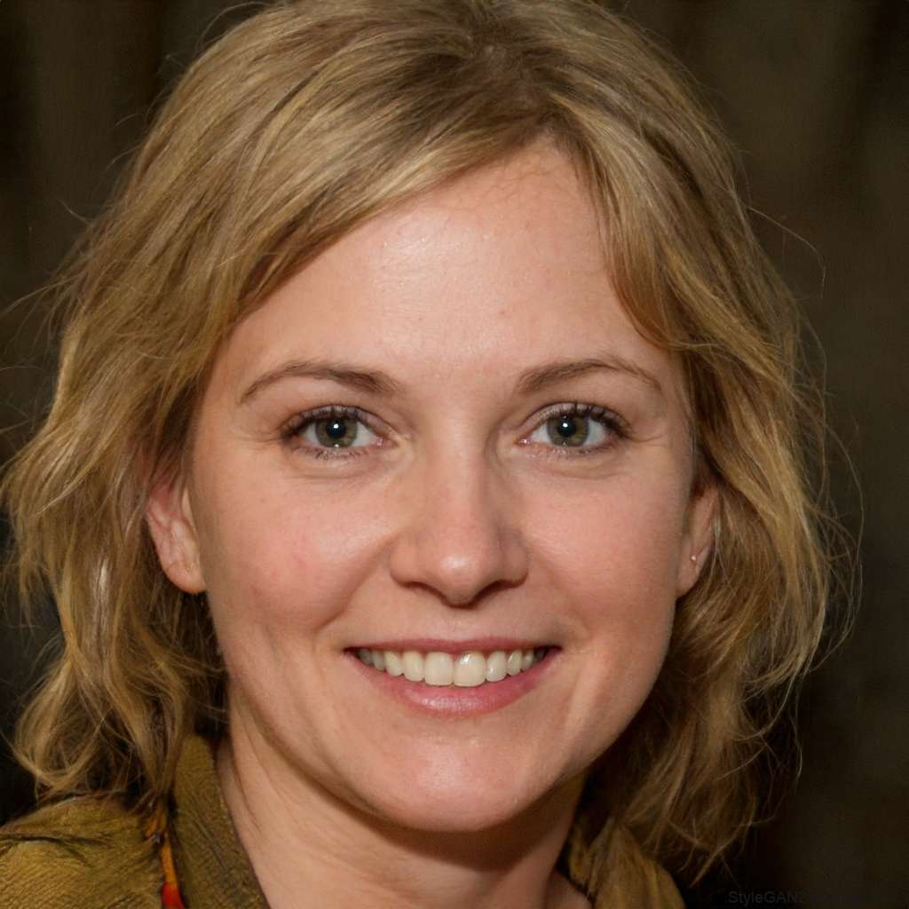

Lochquarry Outdoor Centre is set in acres of land in the heart of the majestic Argyll hills. On our doorstep is not only magnificent scenery, but also a breath-taking selection of outdoor and adventurous activities.
With activities designed to meet the needs of all ages and experiences of young people, Lochquarry truly brings adventure to everyone.
Each activity is run under the instruction of one of our highly trained staff and all safety equipment is provided. Let’s meet some of the Lochquarry staff:

Name: Claire Jack
Position: Centre Manager
Responsible for: The overall running of the centre and all of its activities
Favourite Activity: Pole climb

Name: Robbie Elliot
Position: Senior Instructor (Land)
Responsible for: Overseeing all of the land-based activities
Favourite Activity: Hillwalking in the beautiful Scottish Highlands
Name: Marion Hunter
Position: Centre Administrator
Responsible for: Making bookings and arranging activity slots for groups
Favourite Activity: Making sure everyone has a great time when they visit Lochquarry
Our activities are very popular with youth groups including Scouts and Guides.
To book your next adventure at Lochquarry, please phone 01475 229 8311.
For more information about outdoor education and safety standards, visit Learning Outside the Classroom .